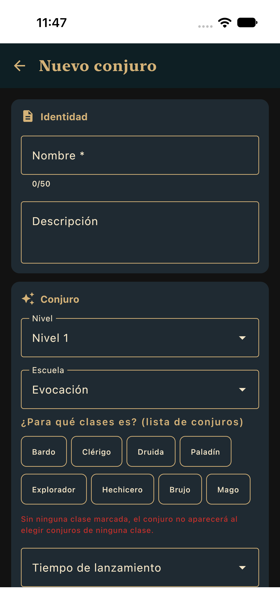
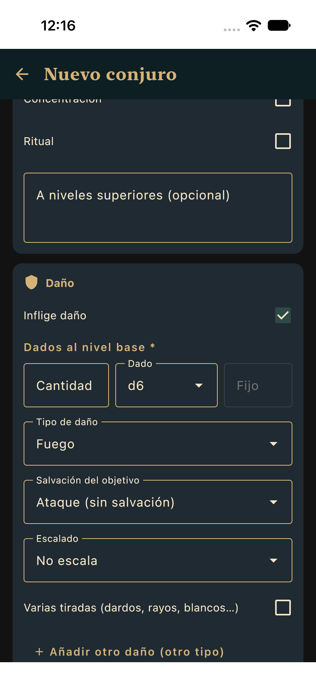
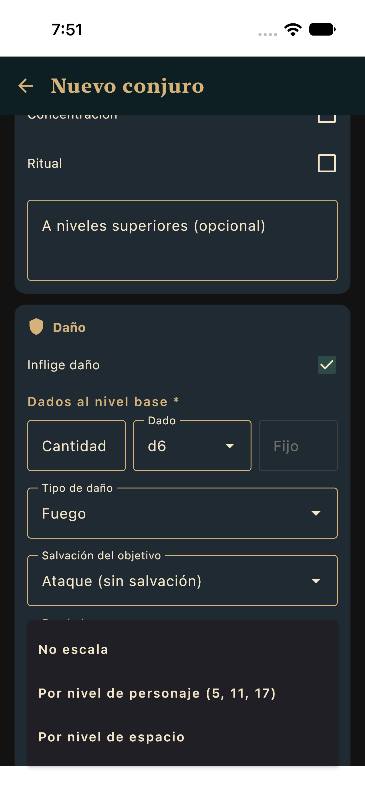
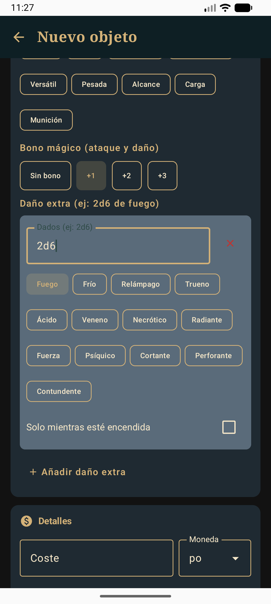
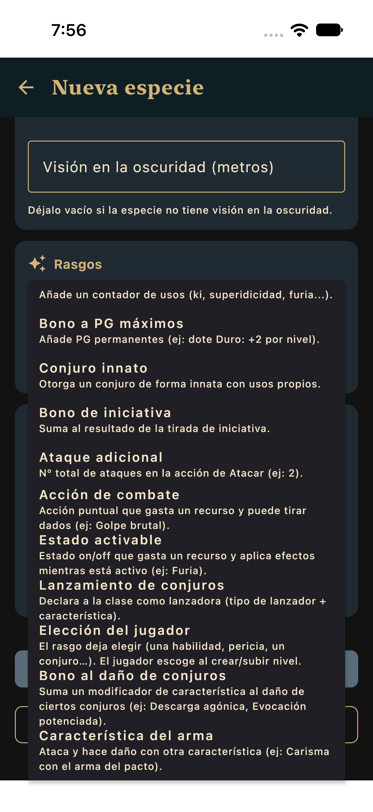
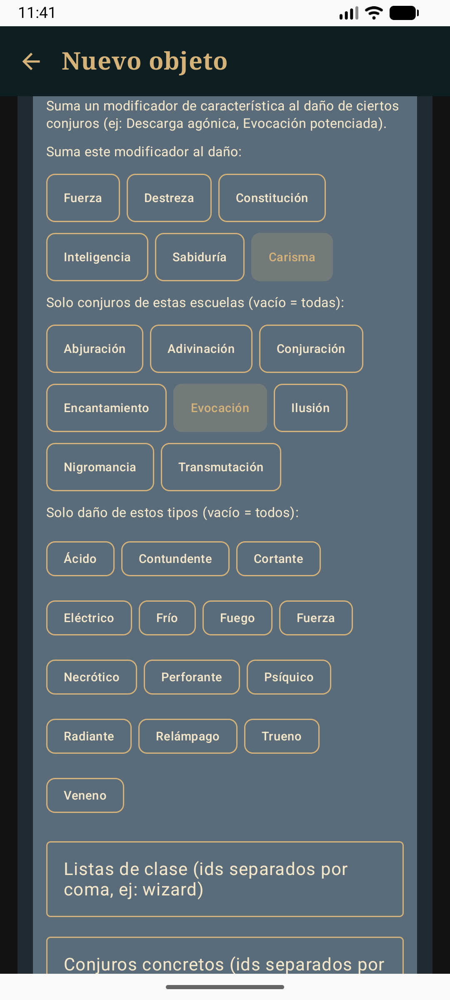
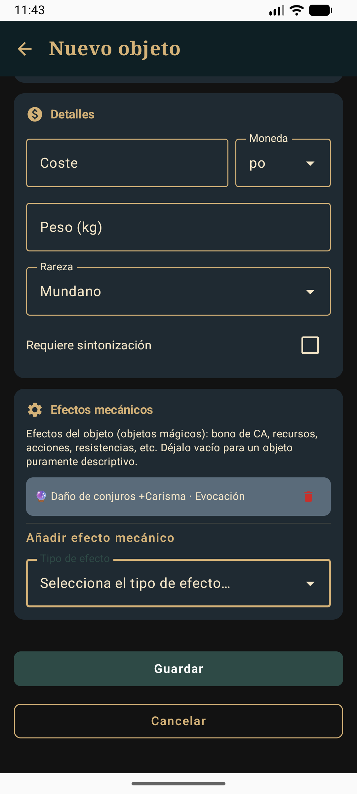

Todo lo anterior describe el formato JSON, pero no hace falta escribirlo a mano: la app trae un editor gráfico en Ajustes → Contenido personalizado. Lo que creas ahí se guarda en un pack local (user_custom) y el motor lo usa igual que el contenido del SRD. Las capturas son de la versión Android; en iOS es la misma pantalla.
En Ajustes toca Contenido personalizado. La pantalla tiene una sección por tipo: Dotes, Trasfondos, Especies, Clases, Equipo y Conjuros. Cada una tiene un botón + para crear, y cada objeto creado muestra Editar y Eliminar. Todas menos Conjuros tienen además un botón para importar un JSON suelto.
Pantalla Contenido personalizado, con una sección por tipo
Orden recomendado. Los trasfondos y las clases solo aceptan equipo, herramientas y dotes que ya existen en el catálogo (se buscan, no se escriben). Por eso conviene crear en este orden:
Equipo (armas, armaduras, herramientas, paquetes).
Dotes.
Trasfondos, especies y clases, que usan lo anterior.
Conjuros. Si es para una clase propia, crea antes la clase con el efecto *Lanzamiento de conjuros*; solo así su lista aparece en «¿Para qué clases es?».
21.2 Cómo funcionan los controles
Todos los formularios siguen la misma regla:
Control
Cuándo se usa
Ejemplos
Desplegable
Se elige una opción
Dado de golpe, categoría de dote, nivel y escuela del conjuro, tipo de daño, rareza
Chips
Se pueden marcar varias
Características primarias, habilidades, propiedades de arma, clases de un conjuro
Campo numérico
Una cantidad libre
Velocidad, CA base, nivel de un rasgo, oro alternativo. Peso, velocidad, visión en la oscuridad y alcance admiten decimales (coma o punto): 1.5 kg, 10.5 m
Cantidad + dado
Una tirada
2 y d6 dan 2d6
Buscador de catálogo
Un objeto que ya existe
Equipo inicial, herramientas, dote de origen
Dados. Escribe la cantidad y elige el dado (d4, d6, d8, d10, d12, d20, d100). Con cantidad vacía no se guarda nada. En los dados de daño y curación de conjuros hay además un campo Fijo para sumar un número (1d4+1, Proyectil mágico); se habilita al escribir la cantidad. Una fórmula importada que no cabe ahí (1d6+1d4) se muestra como texto libre y se conserva tal cual; si la borras vuelve el selector.
Valores con «Otro». El tiempo de lanzamiento, el alcance y la duración de un conjuro son desplegables con los valores habituales. Si necesitas otro, elige Otro: aparecen un campo numérico para la cantidad y un selector de unidad. Se guarda como texto, por ejemplo 10 min o 24 m.
Valores que no encajan. Si un objeto importado trae un valor que no está en las opciones (como el 9 m / 30 f / 6 cas de los conjuros del SRD), el campo lo muestra como valor actual y lo conserva hasta que elijas otro.
Campos obligatorios. Los marcados con * (y los que se ponen en rojo, como las 2 salvaciones de una clase) deben completarse para que Guardar se habilite.
21.3 Crear un conjuro
En la sección Conjuros toca +.
En Identidad escribe el nombre y, si quieres, la descripción.
En Conjuro elige el nivel (Truco o 1 a 9) y la escuela, ambos en desplegables. Un conjuro importado sin escuela muestra *Sin especificar* y la conserva así. Justo debajo, en ¿Para qué clases es?, marca las listas de clase que pueden usarlo (Bardo, Clérigo, Druida, Paladín, Explorador, Hechicero, Brujo, Mago; y las clases propias que tengan lanzamiento de conjuros): así aparece al elegir conjuros de esa clase. Si no marcas ninguna, el formulario te avisa en rojo: el conjuro no sale en las listas por clase ni se puede preparar, aunque sí se encuentra buscándolo por nombre o dándolo como conjuro innato.
Rellena los datos de lanzamiento:
Tiempo de lanzamiento: Acción, Acción adicional, Reacción u Otro (minutos u horas).
Alcance: Lanzador, Toque, 3 m, 9 m, 18 m, 36 m, 90 m, 150 m u Otro (metros o kilómetros).
Componentes: marca V, S y/o M. Al marcar M aparece un campo para el material (opcional); se guarda como V, S, M (pétalo de rosa).
Duración: Instantánea, 1 asalto, 1 min, 10 min, 1 h, 8 h, 24 h, Hasta que se disipe u Otro (asaltos, minutos, horas o días).
Marca Concentración o Ritual si aplica, y rellena A niveles superiores si el conjuro mejora con espacios más altos (opcional). Es solo texto para el diálogo del catálogo: lo que calcula el escalado es la sección Escalado de más abajo.
Los valores del SRD con otro formato, como 18 m / 60 f / 12 cas o Instant., no están entre las opciones: se muestran como valor actual y se conservan mientras no elijas otra.

Formulario de conjuro nuevo: nivel, escuela y datos de lanzamiento
Si el conjuro hace daño, activa Inflige daño y completa:
Dados al nivel base (obligatorio): cantidad y dado, y Fijo si suma un número.
Tipo de daño, en un desplegable.
Salvación del objetivo: elige la característica, o «Ataque (sin salvación)» si es un ataque de conjuro. Con salvación puedes marcar que salvar reduce el daño a la mitad.

Sección Daño: dados, tipo y salvación
En Escalado elige cómo crece el daño: No escala, por nivel de personaje (trucos: niveles 5, 11 y 17) o por nivel de espacio (conjuros nivelados), e indica los dados extra por escalón (solo NdM, sin bono fijo).
Varias tiradas (Proyectil mágico, Rayo abrasador, Descarga sobrenatural): marca *Varias tiradas*, elige cuántas (siempre la misma, más por nivel de personaje o más por nivel de espacio), las tiradas al nivel base, las extra por escalón y cómo se llaman (dardos, rayos, blancos). Los dados de arriba pasan a ser los de cada tirada: Proyectil mágico es 1d4+1, tres dardos al nivel 1 y uno más por cada nivel de espacio. La ficha muestra «×N dardos» y cada tirada la haces tú.
Si el conjuro inflige otro tipo de daño a la vez (Tormenta de hielo: contundente y frío), toca Añadir otro daño (otro tipo) y completa sus dados, su tipo y su escalado. Puedes agregar todos los que necesites; comparten la salvación del daño principal y la ficha los tira juntos. Si el conjuro cura, usa la sección Curación: dados, si suma el modificador de aptitud mágica y su escalado (el de nivel de personaje solo se ofrece en los trucos). Un conjuro puede dañar y curar a la vez.

Escalado del daño por nivel de personaje
Mientras está activo (opcional), para conjuros que se encienden y se apagan mientras duran (Favor divino, Arma espiritual, Impacto certero). Marca *Se enciende y se apaga mientras dura* y completa lo que necesites; los tres bloques son independientes:
Daño extra en tus ataques con arma: dados y tipo por golpe (Favor divino: 1d4 radiante). Marca *Se repite en los niveles 5, 11 y 17* si crece con el nivel (Impacto certero).
Ataques que crea el conjuro: cada uno tiene su nombre (si el conjuro ofrece varios modos), dados, tipo, cómo se resuelve (ataque de conjuro o una salvación), escalado y si suma el modificador de aptitud mágica. Cada ataque añade una fila en Combate; si lo resuelve una salvación, la fila muestra la CD en vez del d20.
Tus ataques con arma usan tu aptitud mágica (Impacto certero, Shillelagh): puedes limitarlo a cuerpo a cuerpo, darte competencia con el arma y cambiar el dado del arma según tu nivel (1, 5, 11 y 17). Un conjuro de concentración apaga el anterior y un descanso apaga todos; no hay temporizador.
Toca Guardar. El conjuro ya está en el catálogo y se puede aprender, preparar y lanzar como cualquier otro; su celda de daño se tira desde la tarjeta del conjuro.
El editor conserva los datos que no muestra: si editas un conjuro importado, por ejemplo los daños adicionales de un ataque que crea, no se pierden. Tres cosas se borran a propósito: desmarcar «Inflige daño» quita todo el bloque de daño (también las varias tiradas y los daños adicionales), desmarcar «Se enciende y se apaga» quita todo el efecto activo, y un escalado con los dados vacíos se descarta al guardar. Los ataques que crea el conjuro se guardan como attack (el primero) y attacks (los demás): el motor los junta en el mismo orden, así que el resultado es el mismo aunque el JSON cambie de forma.
21.4 Crear un arma mágica
En la sección Equipo toca +, escribe el nombre y en Categoría elige Arma.
En Datos del arma completa:
Dado de daño: cantidad y dado (1 y d8 dan 1d8).
Tipo de daño (cortante, perforante o contundente), en un desplegable.
Características de ataque (Fuerza y/o Destreza) y Propiedades, en chips. Si marcas *Versátil* aparece el Dado versátil (a dos manos).
Maestría de arma (desplegable, opcional): Cleave, Graze, Nick, Push, Sap, Slow, Topple o Vex, cada una con una frase de su efecto.
Armas a distancia o arrojadizas: si marcas *Arrojadiza* o *Munición* aparece el Alcance (metros) con el valor Normal (admite decimales) y el Largo (opcional). Sin alcance normal no se guarda alcance. Con *Munición* aparece además Tipo de munición que usa (Flechas, Virotes, Proyectiles de honda, Balas de arma de fuego o Dardos).
Elige el Bono mágico (Sin bono, +1, +2 o +3) en su desplegable: se suma al ataque y al daño de esa arma.
Con Añadir daño extra agrega una tirada aparte, por ejemplo 2d6 de fuego. Si el daño solo debe contar cuando el arma «está encendida» (como la Lengua de fuego), marca Solo mientras esté encendida: la ficha mostrará un botón para encenderla y apagarla.
En Detalles puedes indicar la rareza y si requiere sintonización.

Datos del arma: bono mágico y daño extra
Un arco y sus flechas. Crea primero la munición (§21.10, categoría *Munición*, tipo *Flechas*, cantidad por lote). Después crea el arma con la propiedad *Munición*, el mismo tipo y su alcance. La ficha enlaza el arma con el lote del mismo tipo que lleve el personaje y va gastando las unidades.
Las propiedades que ofrece el editor son Ligera, Sutil, Arrojadiza, A dos manos, Versátil, Pesada, Alcance, Carga y Munición. Una propiedad que el editor no muestra (special, two_handed_unless_mounted) se conserva si editas un arma importada. El Dado versátil solo se guarda si *Versátil* está marcada.
21.5 Agregar efectos (grants)
El formulario de equipo tiene la sección Efectos mecánicos con Añadir efecto mecánico; los de dotes, especies, trasfondos y clases usan el mismo constructor en su apartado de efectos (plegable como «avanzado» en especies y trasfondos) y dentro de cada rasgo. Al tocar «Selecciona el tipo de efecto…» se abre la lista de tipos; cada uno trae una descripción corta.

Lista de tipos de efecto, con los de magia al final
Tipos de efecto disponibles en el constructor:
Efecto
Para qué sirve
Mejora de característica
Sube una o más características.
Competencia
Habilidades, salvaciones, armas, armaduras, herramientas o idiomas.
Sentidos
Visión en la oscuridad, visión ciega, etc.
Bono de velocidad
Suma metros a la velocidad base.
Fórmula de CA
CA sin armadura calculada con características (10 + DES + CON).
Bono de CA
Bono fijo a la CA (objetos mágicos).
Resistencia, vulnerabilidad e inmunidad a daño
Mitad, doble o ningún daño de ciertos tipos.
Inmunidad a estados
Asustado, hechizado, envenenado…, siempre o en ciertas situaciones.
Recurso gastable
Contador de usos (ki, furia…). Los usos pueden ser un número fijo, el nivel, el bono de competencia o un modificador de característica.
Bono a PG máximos
PG permanentes (dote Duro).
Conjuro innato
Un conjuro: siempre preparado, a voluntad o con usos por descanso largo.
Bono de iniciativa
Suma a la tirada de iniciativa.
Ataque adicional
Número total de ataques al atacar.
Acción de combate
Acción puntual que gasta un recurso (se elige de los que ya añadiste) y puede tirar dados.
Estado activable
Estado on/off que gasta un recurso (Furia).
Lanzamiento de conjuros
Declara a la clase como lanzadora (tipo de lanzador y característica).
Elección del jugador
Deja elegir habilidad, pericia, conjuro, dote de origen, aptitud de lanzamiento u opciones propias con sus efectos (linajes).
Bono al daño de conjuros
Ver abajo.
Característica del arma
Ver abajo.
Los tipos de magia más recientes son:
Bono al daño de conjuros: suma el modificador de una característica al daño de los conjuros que cumplan los filtros (escuela, tipo de daño, lista de clase, solo trucos…).
Característica del arma: ataca y hace daño con otra característica (Pacto de la hoja).
Elección del jugador → Conjuro: deja elegir un conjuro, con nivel, lista de clase, escuelas y, opcionalmente, usos gratis por descanso largo (Arcanum místico).
Resistencia, vulnerabilidad e inmunidad a daño e inmunidad a estados.
Recursos, acciones y conjuros innatos.
Recurso gastable: elige la recuperación y cuántos usos tiene: un número fijo, igual al nivel, igual al bono de competencia (el aliento del Dracónido) o igual a un modificador de característica (siempre con al menos 1 uso, aunque el modificador sea 0 o negativo). *Desde el nivel* hace que exista solo a partir de ese nivel.
Si una acción de combate o un estado activable gasta el recurso, su botón ya muestra los usos y el contador propio desaparece solo. *Ocultar su contador* sirve para un recurso que solo consulta otro efecto. Al crear la acción de combate, el recurso se elige de la lista de los que ya añadiste en el mismo sitio; si no hay ninguno, se escribe su id.
Conjuro innato: *Siempre preparado* (sin contador propio), *A voluntad* (la ficha lo marca ilimitado, como el truco de un linaje) o *N usos por descanso largo*; y *Desde el nivel* para los que llegan más tarde (el segundo conjuro de un linaje, a nivel 3).
Elecciones con opciones propias (linajes, ancestros, legados). Con *Elección del jugador* y Qué se elige → Opciones propias creas una elección como el Linaje élfico o el Ancestro dracónico del SRD:
Escribe el título y cuántas opciones elige el jugador.
Toca Añadir una opción por cada una. Cada opción tiene nombre, descripción y sus propios efectos al elegirla, con este mismo constructor: conjuros innatos, resistencias, sentidos, competencias… Una opción puede no dar ningún efecto y ser solo texto.
Hacen falta al menos dos opciones con nombre, y tantas como las que elige el jugador.
Toca Añadir efecto.
Por ejemplo, un «Linaje feérico» con dos opciones: *Ígnea* (resistencia al fuego y el truco Luz a voluntad) y *Glacial* (resistencia al frío). Al crear el personaje, el jugador ve las dos tarjetas con lo que da cada una y elige.
Otros dos tipos de elección se crean igual de fácil: Característica de lanzamiento (el jugador elige con cuál de las características que marques lanza los conjuros innatos de ese origen; es lo que hacen el Elfo, el Gnomo y el Tiefling) y Dote de origen a elegir (como el Humano versátil).
Cosas que conviene saber:
Una elección ya creada no se edita: se borra y se vuelve a crear.
El id de la elección sale de su título, y es la clave donde se guarda lo que eligió el jugador. Dos elecciones del mismo personaje con el mismo título (una de especie y otra de clase, por ejemplo) se pisarían: usa títulos distintos.
En una especie, ponla en Efectos globales para que se ofrezca al crear el personaje (§11).
Ejemplo: un objeto que suma Carisma al daño de tus conjuros de Evocación. Elige el tipo «Bono al daño de conjuros», marca Carisma y la escuela Evocación, y toca Añadir efecto.

Formulario Bono al daño de conjuros con Carisma y Evocación
El efecto queda en la lista del objeto con un resumen; para quitarlo, toca el icono de eliminar. Para cambiarlo, elimínalo y créalo de nuevo.

Efecto agregado a la lista, con su resumen
21.6 Crear una dote
En la sección Dotes toca +.
Identidad: nombre, descripción y, si quieres, un resumen corto (se usa donde hay poco espacio, como la ficha en PDF).
Categoría: elige en el desplegable Origen, General, Estilo de combate (COMBAT_STYLE) o Épica. Marca Repetible si se puede tomar más de una vez (Habilidoso, Resiliente).
Prerequisitos (opcionales; déjalos vacíos si no hay): Nivel mínimo, Característica mínima (marca una o varias; basta con cumplir el mínimo en una de ellas) con su Puntuación mínima, que es obligatoria si marcaste alguna característica (Guardar queda deshabilitado hasta rellenarla), y Requiere lanzar conjuros. No hay forma de exigir otra dote, una clase o una especie. Los prerrequisitos solo se comprueban al subir de nivel, no en la dote de origen del trasfondo.
Efectos mecánicos: añade los efectos con el constructor (§21.5): mejoras de característica, competencias, conjuros innatos, etc.
Toca Guardar.
Reglas que conviene saber:
Al editar se conservan requiresClass, el icono y el texto de ambientación aunque el formulario no los muestre. Una dote que reutiliza el id de una del SRD la reemplaza.
Una dote guardada con el editor antiguo como «Estilo de combate» (FIGHTING_STYLE) pasa sola a COMBAT_STYLE, y ya la ofrecen el Estilo de combate del Guerrero, el Paladín y el Explorador.
El filtro de la enciclopedia «Estilo» y la etiqueta de las dotes de estilo usan COMBAT_STYLE.
Importar dote acepta archivos sin category (es opcional) y solo rechaza el archivo si trae claves de otro tipo en el primer nivel (hitDie, speed, startingEquipment…).
Al importar un pack, el validador avisa (sin bloquear) de una categoría desconocida, un prerrequisito incompleto o con códigos que no son características, un requiresClass que no existe, una dote de origen con prerrequisito (no se comprueba), elecciones que otorgan o filtran dotes inexistentes y una dote que reemplaza a una repetible del SRD sin ser repetible.
21.7 Crear un trasfondo
En la sección Trasfondos toca +.
Identidad: nombre e historia.
Puntuaciones de característica: marca exactamente 3 (el contador muestra Seleccionadas: n/3 y se pone rojo hasta llegar a 3). Al crear el personaje, el jugador reparte +2/+1 o +1/+1/+1 entre ellas.
Dote de origen: elige del catálogo la dote que otorga el trasfondo a nivel 1. «Sin dote» es válido y el trasfondo se guarda sin ninguna.
Competencias: marca las habilidades y busca las herramientas en el catálogo (solo se pueden añadir herramientas que ya existen).
Equipo inicial: busca cada objeto en el catálogo y pulsa Añadir (opción A). Indica el Oro incluido en el equipo, las monedas que acompañan a esos objetos (el «15 po» de las clases del SRD), y el Oro alternativo, lo que recibe si elige la opción B en vez del equipo.
Otros efectos (avanzado), plegable: conjuros innatos, resistencias u otros efectos que no encajan arriba.
Toca Guardar.
Reglas que conviene saber:
Al editar un trasfondo del SRD (o importado), la mejora de característica y la dote conservan su id, título y, con la misma dote, su fromClass y descripción; el id es la clave donde los personajes ya creados guardaron su reparto. Si cambias de dote se descarta lo de la anterior.
Una dote a elegir por el jugador (grant FEAT sin featId) no se edita en la sección de dote: aparece en Otros efectos (avanzado) y se conserva.
Nombres de habilidad. El motor compara las competencias como texto exacto. Al importar (pack u objeto suelto) la app corrige sola los nombres que solo difieren del de la lista en mayúsculas, tildes o espacios («Juego de Manos» → «Juego de manos») en las competencias de habilidad, en el pool de las elecciones de habilidad y en las habilidades de clase; el validador lo avisa con una nota. Una palabra distinta («Arcanos» en vez de «Conocimiento arcano») no se corrige: usa el nombre de la lista. Las herramientas no se tocan.
Las herramientas guardan solo el nombre; el objeto de equipo sí guarda su id del catálogo.
Si no indicas Oro alternativo, la opción B del jugador da 0 po.
Al importar un pack, el validador avisa (sin bloquear) de un trasfondo sin mejora de característica, con pool distinto de 3, con una dote que no existe, con más de una dote, sin goldAlternative o con id de equipo desconocidos.
21.8 Crear una especie
En la sección Especies toca +.
Identidad: nombre y descripción.
Físico: elige el tipo de criatura (Humanoide es el habitual), la velocidad en metros y el tamaño. Si marcas más de un tamaño, el jugador elegirá entre ellos al crear el personaje (el formulario lo resume como «Elección: Pequeño o Mediano», de menor a mayor); no se puede dejar ninguno marcado. Rellena la visión en la oscuridad en metros o déjala vacía si no tiene. Una velocidad vacía o no válida se guarda como 9 m.
Rasgos: toca para añadir un rasgo (p. ej. «Linaje feérico»). Cada rasgo tiene nombre, descripción, nivel al que aparece (número de 1 a 20) y, si lo necesita, Efectos mecánicos (se despliega con el constructor de §21.5). Un rasgo puede ser solo texto.
Efectos globales (avanzado), plegable: efectos de la especie que no son un rasgo con nombre (mejoras de característica, resistencias…). Es también el sitio para una elección que el jugador deba hacer al crear el personaje (una habilidad, por ejemplo): las elecciones dentro de un rasgo no se ofrecen en esa pantalla (§11).
Toca Guardar.
Reglas que conviene saber:
Al editar una especie con elección de tamaño, el tamaño base, el CHOICE y su id se conservan mientras no cambies los tamaños marcados. Si los cambias se regeneran las opciones pero se mantiene el id, para no invalidar lo que ya eligieron los personajes. Una especie nueva usa el idspecies_size.
Los rasgos sin nombre se descartan al guardar, sin aviso. Una especie importada sin tipo de criatura se guarda como Humanoide al editarla (la app ya lo asumía).
La ficha y el PDF muestran el tamaño que eligió el jugador, no el base.
Los linajes y subespecies (el Elfo, el Gnomo, el Tiefling, el Dracónido) se crean con una *Elección del jugador → Opciones propias* en Efectos globales (§21.5). También se pueden crear la elección de dote de origen (Humano) y la de aptitud de lanzamiento. Un efecto ya creado no se edita: se borra y se vuelve a crear.
21.9 Crear una clase
La clase es el formulario más largo. Crea antes el equipo y las herramientas que quieras como equipo inicial (§21.1). Después, en este orden:
En la sección Clases toca +.
Identidad: nombre (obligatorio) y descripción.
Básico: elige el dado de golpe en el desplegable (d6, d8, d10, d12) y marca las características primarias en chips.
Competencias:
Tiradas de salvación: deben ser exactamente 2 (chips). El título se pone rojo hasta que lo cumplas y Guardar no se habilita.
Pool de habilidades de la clase (chips) y cuántas elige el jugador (campo numérico; no puede superar el pool, y vacío equivale a 0, o a 1 si el pool tiene una sola habilidad).
Equipo inicial: en la Opción A busca cada objeto en el catálogo y pulsa Añadir, e indica el Oro incluido (las monedas que acompañan a esos objetos, el «15 po» de las clases del SRD). Si la clase ofrece más de un conjunto, como el Guerrero, toca Añadir otro conjunto de equipo: aparece la Opción B (y luego C…) con su propio buscador y su oro incluido, y puedes quitarla con Quitar la opción. Al final, el Oro alternativo es siempre la última opción.
Rasgos: toca Añadir rasgo por cada rasgo de clase. Cada uno lleva nombre, descripción, nivel al que aparece (número de 1 a 20; Furia a nivel 1, Ataque adicional a nivel 5) y Efectos mecánicos (constructor de §21.5, plegable). Un rasgo puede ser solo texto.
Subclases: indica el nivel al que se elige subclase (número de 1 a 20) y toca Añadir subclase. Cada subclase tiene nombre, descripción y sus propios rasgos (se despliegan con la flecha). La app crea sola el rasgo «Subclase» en ese nivel con la elección.
Multiclase (opcional): marca las características que se exigen para tomar esta clase como clase secundaria, en TODAS (deben cumplirse todas) o UNA (basta con una; al marcar una en un grupo sale del otro), y la Puntuación mínima (13 en el SRD). Sin ninguna marcada, cualquiera puede multiclasear a ella. Debajo, las competencias que gana al multiclasear: armas, armadura, herramientas y cuántas habilidades elige (0 = ninguna).
Toca Guardar.
Reglas que conviene saber:
El nivel de subclase vale 3 si no lo cambias, y la elección solo se crea si hay al menos una subclase con nombre. Si borras todas las subclases, el rasgo «Subclase» desaparece.
Los rasgos y subclases sin nombre se descartan al guardar, sin aviso.
El equipo inicial puede tener tantas opciones como quieras: la A son los objetos más el oro incluido, cada conjunto adicional es otra opción (B, C…) y el oro alternativo cierra la lista. Un conjunto sin objetos se descarta al guardar. Los trasfondos solo ofrecen A y oro.
La progresión (bono de competencia de nivel 1 a 20) se rellena con la tabla estándar. Los rasgos se desbloquean por su propio nivel, no por la tabla.
El id se genera del nombre con el prefijo custom_, sin tildes ni ñ («Bárbaro» queda custom_barbaro). Si ya existe una clase con ese id, la nueva queda como custom_barbaro_2, _3… y no pisa a la anterior. Lo mismo vale para los rasgos y subclases con el mismo nombre dentro de la clase, y para el resto de tipos (dotes, trasfondos, especies, equipo y conjuros). Editar un objeto nunca cambia su id.
Una clase nueva tiene multiclase libre y no otorga competencias al multiclasear hasta que rellenes la sección Multiclase. Todas las clases del SRD piden 13 en su característica principal.
El requisito del editor usa un solo mínimo para todas las características. Si importas una clase con mínimos distintos por característica, se conservan mientras no toques el requisito; al editarlo se unifican.
Al editar una clase importada, los campos que el formulario no muestra (orden de características recomendado, progresión, icono, texto de ambientación y competencias de armas y armaduras en texto libre, también las de multiclase) se conservan al guardar.
Para que la clase lance conjuros, añade a uno de sus rasgos el efecto Lanzamiento de conjuros (tipo de lanzador y característica); así su lista aparece al crear conjuros (§21.3). Las tablas de espacios de conjuro propias y los recursos por nivel no se pueden definir desde el editor (§21.11).
21.10 Crear otros objetos de equipo
Además del arma mágica (§21.4), el formulario Equipo sirve para el resto de objetos:
En Equipo toca +, escribe el nombre y en la sección Tipo elige la Categoría (desplegable): Arma, Armadura, Escudo, Equipo de aventura, Herramienta, Consumible, Contenedor, Foco mágico, Objeto maravilloso o Munición. Arma y Herramienta piden además un Subtipo (desplegable); al cambiar de categoría el subtipo se borra, y volver a elegir la misma lo conserva.
Armadura: indica la CA base (número; vacío equivale a 10), su categoría (ligera, media o pesada; desplegable), el tope de modificador de DES (solo la media; vacío equivale a 2, el valor del SRD), el requisito de Fuerza (opcional) y si da desventaja en Sigilo. La ligera suma el DES completo y la pesada no lo suma. El subtipo de la armadura (light, medium, heavy) sale solo de esa categoría.
Detalles (todas las categorías): coste (número entero) y moneda (po, pp o pc, es decir oro, plata o cobre), peso en kg, rareza (Mundano por defecto) y Requiere sintonización.
Paquete: si la categoría es Equipo de aventura o Contenedor aparece Contenido del paquete; busca cada objeto en el catálogo, pulsa Añadir y ajusta la cantidad. El personaje recibe su contenido al obtenerlo.
Efectos mecánicos: bono de CA, recursos, resistencias, etc. (§21.5). Vacío = objeto puramente descriptivo.
Toca Guardar.
Escudo. No tiene sección de datos propia: al guardar se crea con el bono de CA estándar de +2, que no se puede cambiar en el editor. Un escudo mágico se hace sumando un efecto *Bono de CA* con el extra. Si editas un escudo importado, su bloque shield (bono, acción de equipar, entrenamiento) se conserva.
Munición. Al elegir la categoría *Munición* aparece Datos de la munición: el Tipo de munición (Flechas, Virotes, Proyectiles de honda, Balas de arma de fuego o Dardos; es lo que la enlaza con las armas que la usan) y la Cantidad por lote (lo que recibe el personaje al obtenerla; vacío equivale a 1). La ficha lleva la cuenta de las unidades gastadas. El contenedor recomendado (recommendedContainer) solo se escribe por JSON.
Herramienta, Contenedor y Foco mágico. El editor solo les pone nombre, subtipo (en la herramienta), detalles y efectos; no crea sus datos propios (tool, container, focus, §15). Funcionan como objetos de inventario y la pestaña Inventario los agrupa bien (los focos en «Focos»), pero una Herramienta sin bloque tool no muestra característica ni usos. Si necesitas esos datos, importa el objeto desde un pack JSON; si luego lo editas en la app, se conservan.
21.11 Qué se puede hacer solo con JSON
El editor gráfico no cubre todo. Estas partes se hacen importando un pack JSON (§19):
Conjuros:
Elegir armas concretas en un conjuro que cambia la aptitud del arma (weaponAbility.weaponIds, como Shillelagh con bastón y garrote).
Los daños adicionales y las varias tiradas dentro de un ataque que crea el conjuro. Si el conjuro ya los trae, se conservan al editarlo.
Un tipo de daño fuera de los 13 del desplegable (el SRD usa elemental y fuego o frío en tres conjuros de invocación).
La salvación de cada daño adicional: siempre es la del daño principal.
Los tipos de efecto que no aparecen en la lista del constructor (DAMAGE_BONUS, ATTACK_BONUS, WEAPON_MASTERY, ROLL_TABLE, COMPUTED_STAT, ADVANTAGE, etc.).
Importar conjuros sueltos: solo se importan dentro de un pack completo.
Bestias (Forma Salvaje del Druida) e invocaciones sobrenaturales del Brujo: el editor no tiene sección para ellas; se crean en un pack JSON (§14 y §16).
Equipo:
Los campos de arma fixedDamage y notes, y una unidad de alcance distinta de metros.
Los bloques tool, container y focus, el recommendedContainer de la munición y el bono de un escudo distinto de +2.
Los campos de armadura donMinutes y doffMinutes.
Daño extra con la etiqueta del interruptor personalizada o repetido por nivel (toggleLabel, perCantripTier), y varios paquetes en un mismo objeto.
length, volumeMl, writingCapacityWords, writingCapacityPages, creatureCapacity y allowedSizes.
Un tipo de daño del arma base distinto de cortante, perforante o contundente.
Especies: el constructor cubre los tipos de efecto de las 9 especies del SRD (comprobado por tipo de efecto y de elección, no uno por uno). Lo que no se puede hacer desde la app:
Editar un efecto o una opción de un linaje ya creados: solo se borran y se vuelven a crear.
Elegir una dote concreta como dote fija (featId) o filtrar la dote a elegir por lista de clase: el editor solo ofrece «una dote de origen cualquiera».
minLevel en los tipos de efecto que no sean recurso, conjuro innato o acción de combate.
Las velocidades de vuelo, nado y trepar y los idiomas no son campos de la especie: se expresan con efectos (el Dracónido lo hace con un recurso).
Clases: mínimos de multiclase distintos por característica, orden de características recomendado, tablas de progresión propias (espacios de conjuro, recursos por nivel con FROM_TABLE), WEAPON_MASTERY y la progresión propia de una subclase.
Si importas un objeto con esos datos y lo editas en la app, el formulario conserva los campos que no muestra, incluidos el icono, el texto de ambientación y el resumen corto (display). Está comprobado en el código para clases (con sus rasgos y subclases), equipo, conjuros (también el activeEffect y el count, con las excepciones de §21.3) y especies (también el tamaño y su elección, §21.8). En dotes y trasfondos el display también se conserva; el resto de sus campos ocultos queda pendiente de revisar en la auditoría de cada tipo.